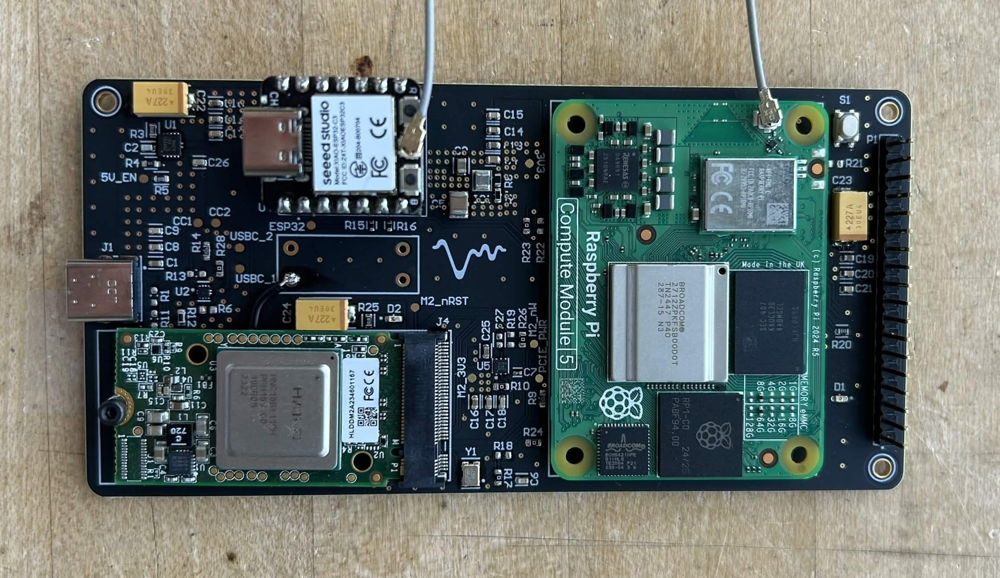

Hardware & Electrical · Capstone Project
Portable assistive listening device that isolates a target speaker's voice in noisy, multi-speaker environments - using a multi-microphone array, custom PCB, and real-time digital signal processing (DSP).



PCB Design
- Completed end-to-end PCB layout in Altium Designer for a custom 4-layer Raspberry Pi CM5 carrier board integrating audio, power, and wireless subsystems
- Routed impedance-controlled high-speed differential pairs for PCIe and USB, integrating the Hailo-8 accelerator, ESP32, USB-C PD, and 5V → 3V3 buck converter
Connectivity & Control
- Integrated a XIAO ESP32 communicating with the Raspberry Pi CM5 over I²C for wireless connectivity and peripheral control
- Interfaced peripherals including a multi-channel microphone array, buttons, and LEDs
Signal Processing
- Hardware platform supports microphone-array-based beamforming, target speaker isolation, and spatial audio acquisition
- Designed to support low-latency noise suppression and speech enhancement pipelines running on the CM5 + Hailo-8 architecture (sub-100 ms end-to-end audio latency)